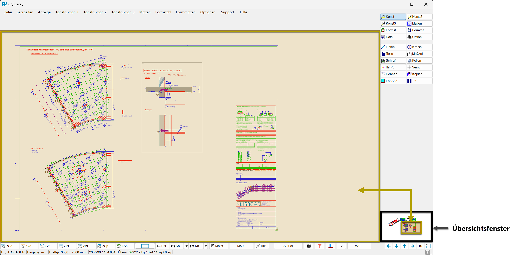
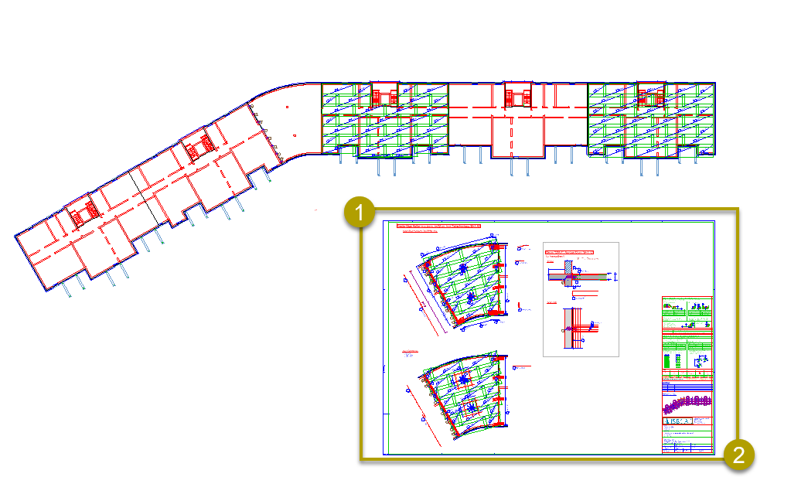
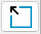
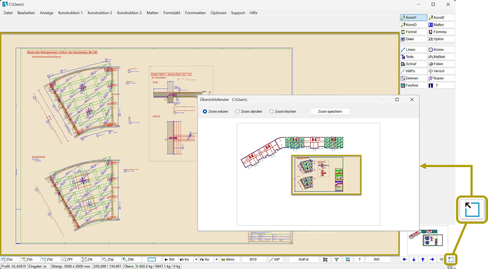
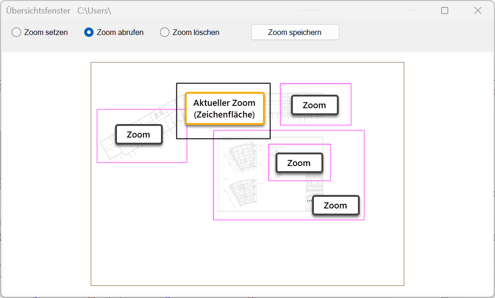

Am unteren Rand des Funktionsbereichs ist das Übersichtsfenster eingeblendet und zeigt die aktuell geöffnete Zeichnung in der Totalen. Wenn Sie mit der Maus über das Übersichtsfenster fahren, gibt Ihnen ein eingeblendetes Rechteck Aufschluss darüber, welcher Bereich Ihrer Zeichnung gerade innerhalb der Zeichenfläche angezeigt wird. Wenn Elemente außerhalb der Plotfläche liegen, wird der Anzeigebereich so vergrößert, dass alle Elemente zu sehen sind.
Im erweiterten Übersichtsfenster können Sie Bereiche der Zeichnung als Zoom-Ausschnitte speichern, um schnell zwischen verschiedenen Zeichnungsbereichen zu wechseln. Das Speichern und Abrufen der Zoom-Ausschnitte ist sowohl über die Funktionen [ZSp] und [ZAb] in der unteren Menüleiste als auch im erweiterten Übersichtsfenster möglich. Das Löschen von Zoom-Ausschnitten, die mit [ZSp] oder im erweiterten Übersichtsfenster gespeichert wurden, kann ebenfalls im erweiterten Übersichtsfenster erfolgen.
 |
Zoomen
Ziehen Sie im Übersichtsfenster einen Rahmen auf, indem Sie den ersten und zweiten Rahmenpunkt anklicken. Der gewählte Zoom-Ausschnitt wird in der Zeichnung angezeigt.
 |
Erweitertes Übersichtsfenster öffnen
Das Übersichtsfenster kann in einem separaten Fenster ausgeführt werden. Die Verwendung des erweiterten Übersichtsfensters bietet sich besonders an, wenn Sie mit großen Zeichnungen oder mehreren Plänen arbeiten. So können Sie Details besser erkennen und Planbereiche präziser einzoomen. Durch Anklicken und Ziehen einer Fensterecke können Sie die Fenstergröße anpassen. Das erweiterte Übersichtsfenster kann z. B. auf einen zweiten Bildschirm verschoben werden und bleibt solange geöffnet, bis Sie es schließen.
Das Speichern und Abrufen von Zoom-Ausschnitten ist sowohl über die Funktionen [ZSp] und [ZAb] in der unteren Menüleiste als auch im erweiterten Übersichtsfenster möglich. Die Anzeige der gespeicherten Zoom-Auschnitte in [ZAb] und dem erweiterten Übersichtsfenster ist synchron und zeigt dieselben Zoom-Auschnitte an. Das Löschen von Zoom-Ausschnitten, die mit [ZSp] oder im erweiterten Übersichtsfenster gespeichert wurden, kann ebenfalls im erweiterten Übersichtsfenster erfolgen.
Öffnen Sie das Fenster, indem Sie unter dem Übersichtsfenster auf 
 |
Zoomen im erweiterten Übersichtsfenster
Wie im Übersichtsfenster am unteren rechten Rand des Programmfensters können Sie im erweiterten Übersichtsfenster ein Rechteck um den Bereich aufziehen, den Sie auf der Zeichenfläche einzoomen möchten.
§Klicken Sie zum Zoomen den ersten und zweiten Rahmenpunkt an.
Zoom-Ausschnitt speichern
Sie können einen Zoom-Ausschnitt speichern und jederzeit wieder abrufen. Diese Ausschnitte werden mit der Zeichnung gespeichert.
§Wählen Sie im oberen Dialogbereich Zoom setzen.
§Ziehen Sie einen Rahmen im erweiterten Übersichtsfenster um den Bereich auf, den Sie als Zoom-Ausschnitt speichern möchten.
§Klicken Sie auf Zoom speichern.
Der Ausschnitt wird gespeichert. Sie können den nächsten Rahmen aufziehen und einen weiteren Ausschnitt speichern.
Mit der Funktion [ZSp] lassen sich Zoom-Ausschnitte ebenfalls speichern und sie werden im erweiterten Übersichtsfenster angezeigt.
Zoom-Ausschnitt abrufen
§Wählen Sie im oberen Dialogbereich Zoom abrufen.
Die gespeicherten Zoom-Ausschnitte werden in der Farbe für Markieren umrandet; [Option | SysDat | Farbeinstellungen | Konstruktionsprogramm | Markieren]. Die aktuell sichtbare Zeichenfläche wird mit einem schwarzen Rahmen gekennzeichnet, wenn Sie den Cursor in das Fenster bewegen.
§Klicken Sie den Zoom-Ausschnitt an, der in der Zeichenfläche angezeigt werden soll.
Beim Anfahren mit dem Cursor wird der entsprechende Rahmen hervorgehoben.

Die Ansicht in der Zeichenfläche wird aktualisiert.
Mit der Funktion [ZAb] lassen sich gespeicherte Zoom-Ausschnitte ebenfalls abrufen.
Zoom-Ausschnitt löschen
§Wählen Sie im oberen Dialogbereich Zoom löschen.
§Klicken Sie den Zoom-Ausschnitt oder mehrere nacheinander an, die gelöscht werden sollen.
Beim Anfahren mit dem Cursor wird der entsprechende Rahmen hervorgehoben.
Mit der Funktion [ZSp] gespeicherte Zoom-Ausschnitte können hiermit ebenfalls gelöscht werden.
Siehe auch:
·Bildausschnitt - zoomen und verschieben